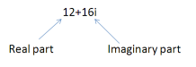

Complex numbers
A number with two components.
Written as
a+bi where a is the
real part and b is the imaginary part.
Recall that real numbers are those that lie on a
number line. Complex numbers extend this idea to numbers that lie on a two dimensional flat plane.
Complex numbers have two components called the real and imaginary parts written like this:

where i is the square root of -1.
They can be plotted on a 2-dimensional plane
If we plot the real part along the horizontal x axis, and the imaginary part along the vertical y axis, each complex number occupies one unique spot on the plane. In the figure below, as you drag the orange point around, you can see what complex number corresponds to that location.
The 'plus' sign does not mean'add'
When you see a complex number like
23+4i
you notice that the plus sign is used to separate the real and imaginary parts. But this has nothing to do with addition.
Whoever decided this simply decided to use the plus sign as a symbol to separate the two components.
An editorial note from the author
In my opinion, mathematics is full of bad naming and poor choice of symbols. For example, just on this page:
- The plus sign does not mean addition.
- In everyday usage 'complex' means complicated, or difficult to understand.
A complex value is a quantity that just needs two numbers to represent it. Perhaps 'compound number' would have been a better choice.
- The terms "real" and "imaginary" Again in everyday use imaginary means it does not realy exist. It is a figment of our imagination.
Whereas 'real' implies solidity - it actualy exists in the real world. This is a false distinction.
If you are a student encountering all this for the first time - take heart. It isn't you.
What are they used for?
They are used in many engineering disciplines, for example for solving equations that describe complex electrical circuits.
Because the letter i is used to mean current in electrical engineering, it is often replaced with the letter j instead.
Other number topics
Scalar numbers
Counting numbers
Numbers that have factors
Special values
(C) 2011 Copyright Math Open Reference.
All rights reserved